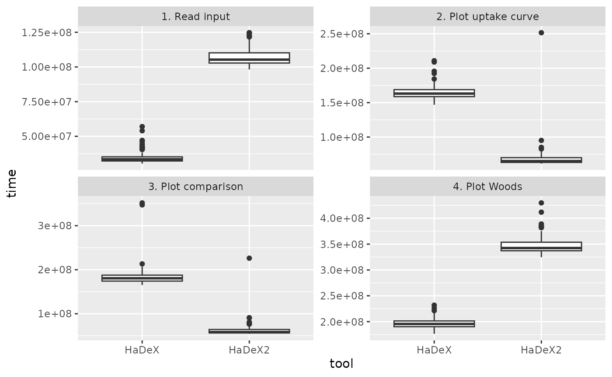

Comparison between versions
version_comparison.RmdThis article discuss differences between the first version of HaDeX (Puchała et al. 2020), and the current version of the package and web-server. As the second version is significantly more complex than the previous one, we ultimately decided against expanding the first version. Instead we created a new entity. But how are they different?
Methods of visualization
Let’s start by discussing methods of visualization available in the packages and web-servers:
| plot_type | HaDeX | HaDeX2 |
|---|---|---|
| comparison | TRUE | TRUE |
| woods | TRUE | TRUE |
| uptake curve | TRUE | TRUE |
| diff uptake curve | FALSE | TRUE |
| butterfly | FALSE | TRUE |
| diff butterfly | FALSE | TRUE |
| chiclet | FALSE | TRUE |
| diff chiclet | FALSE | TRUE |
| heatmap | FALSE | TRUE |
| diff heatmap | FALSE | TRUE |
| 3D structure | FALSE | TRUE |
| volcano | FALSE | TRUE |
| manhattan | FALSE | TRUE |
| uncertainty | FALSE | TRUE |
| coverage | TRUE | TRUE |
| coverage heatmap | FALSE | TRUE |
| measurement variablity | FALSE | TRUE |
| mass uptake curve | FALSE | TRUE |
Web-server features
Let’s see how the features in web-servers differ.
| option | HaDeX | HaDeX2 |
|---|---|---|
| tooltips | TRUE | TRUE |
| helpers | TRUE | TRUE |
| tabular data | TRUE | TRUE |
| times next to each other | FALSE | TRUE |
| export to external tools | FALSE | TRUE |
In the table there are shortened names. Tabular data means that the tabular data is available for the plot. Times next to each other means the option of showing all time point data in two forms: one plot or smaller plots next to each other for time point separately. Export to external tools means an option to download data for tools such as HDXViewer or ChimeraX.
Moreover, in HaDeX2 more visualization options are available.
Package functions
Finally, let’s take a look at package functions from HaDeX2 and see if there is a similar function in HaDeX (even under different name):
| HaDeX2 | HaDeX |
|---|---|
| add_stat_dependency | add_stat_dependency |
| calculate_aggregated_diff_uptake | NA |
| calculate_aggregated_test_results | NA |
| calculate_aggregated_uptake | NA |
| calculate_auc | NA |
| calculate_back_exchange | NA |
| calculate_confidence_limit_values | calculate_confidence_limit_values |
| calculate_diff_uptake | NA |
| calculate_exp_masses | NA |
| calculate_exp_masses_per_replicate | NA |
| calculate_kinetics | calculate_kinetics |
| calculate_MHP | NA |
| calculate_p_value | NA |
| calculate_peptide_kinetics | NA |
| calculate_state_uptake | NA |
| create_aggregated_diff_uptake_dataset | NA |
| create_aggregated_uptake_dataset | NA |
| create_control_dataset | NA |
| create_diff_uptake_dataset | NA |
| create_kinetic_dataset | NA |
| create_overlap_distribution_dataset | NA |
| create_p_diff_uptake_dataset | NA |
| create_p_diff_uptake_dataset_with_confidence | NA |
| quality_control_dataset | NA |
| create_replicate_dataset | NA |
| create_state_comparison_dataset | NA |
| create_state_uptake_dataset | calculate_state_deuteration |
| create_uptake_dataset | NA |
| get_n_replicates | NA |
| get_peptide_sequence | NA |
| get_protein_coverage | NA |
| get_protein_redundancy | NA |
| get_replicate_list_sd | NA |
| get_residue_positions | NA |
| get_structure_color | NA |
| HaDeX_GUI | HaDeX_gui |
| HaDeXify | NA |
| install_GUI | NA |
| plot_aggregated_differential_uptake | NA |
| plot_aggregated_uptake | NA |
| plot_aggregated_uptake_structure | NA |
| plot_amino_distribution | NA |
| plot_butterfly | NA |
| plot_chiclet | NA |
| plot_coverage | plot_coverage |
| plot_coverage_heatmap | NA |
| plot_differential | woods_plot |
| plot_differential_butterfly | NA |
| plot_differential_chiclet | NA |
| plot_differential_uptake_curve | NA |
| plot_manhattan | NA |
| plot_overlap | NA |
| plot_overlap_distribution | plot_position_frequency |
| plot_peptide_charge_measurement | NA |
| plot_peptide_mass_measurement | NA |
| plot_position_frequency | NA |
| plot_quality_control | NA |
| plot_replicate_histogram | NA |
| plot_replicate_mass_uptake | NA |
| plot_state_comparison | comparison_plot |
| plot_uncertainty | NA |
| plot_uptake_curve | plot_kinetics |
| plot_volcano | NA |
| prepare_hdxviewer_export | NA |
| read_hdx | read_hdx |
| reconstruct_sequence | reconstruct_sequence |
| show_aggregated_uptake_data | NA |
| show_coverage_heatmap_data | NA |
| show_diff_uptake_data | NA |
| show_diff_uptake_data_confidence | NA |
| show_overlap_data | NA |
| show_p_diff_uptake_data | NA |
| show_peptide_charge_measurement | NA |
| show_peptide_mass_measurement | NA |
| show_quality_control_data | NA |
| show_replicate_histogram_data | NA |
| show_summary_data | NA |
| show_uc_data | NA |
| show_uptake_data | NA |
| update_hdexaminer_file | NA |
For pairs of functions, we can conduct the analysis of speed using our exemplary data.
Calculation speeds compared
For each pair of functions in the previous section, we can assess relative execution speed using the exemplary dataset as a controlled reference for comparison. We concentrate on six major tasks: reading data file, plotting (and preparing data) uptake curve for one peptide, comparison plot of two biological states, differential Woods plot with difference between two states, reconstruction of the protein sequence and computation of confidence limits.
Code used to create this comparison is shown below, and then the results are presented in a comprehensive form.
library(HaDeX)
dat_HaDeX <- HaDeX::read_hdx(system.file(package = "HaDeX2", "HaDeX/data/alpha.csv"))
dat_HaDeX2 <- HaDeX2::read_hdx(system.file(package = "HaDeX2", "HaDeX/data/alpha.csv"))
version_benchmark <- microbenchmark(
list = alist(`HaDeX_1. Read input` = HaDeX::read_hdx(system.file(package = "HaDeX2", "HaDeX/data/alpha.csv")),
`HaDeX2_1. Read input` = HaDeX2::read_hdx(system.file(package = "HaDeX2", "HaDeX/data/alpha.csv")),
`HaDeX_2. Plot uptake curve` = {
HaDeX::calculate_kinetics(dat = dat_HaDeX,
sequence = "GFGDLKSPAGL",
state = "Alpha_KSCN",
start = 1, end = 11,
time_in = 0, time_out = 1440) %>%
HaDeX::plot_kinetics(kin_dat = .)},
`HaDeX2_2. Plot uptake curve` = {
HaDeX2::calculate_peptide_kinetics(dat = dat_HaDeX2,
sequence = "GFGDLKSPAGL",
state = "Alpha_KSCN",
start = 1, end = 11,
time_0 = 0, time_100 = 1440) %>%
HaDeX2::plot_uptake_curve(uc_dat = .)},
`HaDeX_3. Plot comparison` = {
HaDeX::prepare_dataset(dat = dat_HaDeX,
in_state_first = "Alpha_KSCN_0",
chosen_state_first = "Alpha_KSCN_1",
out_state_first = "Alpha_KSCN_1440",
in_state_second = "ALPHA_Gamma_0",
chosen_state_second = "ALPHA_Gamma_1",
out_state_second = "ALPHA_Gamma_1440") %>%
HaDeX::comparison_plot(calc_dat = .,
theoretical = FALSE,
relative = TRUE,
state_first = "Alpha_KSCN",
state_second = "ALPHA_Gamma")},
`HaDeX2_3. Plot comparison` = {
HaDeX2::create_state_comparison_dataset(dat = dat_HaDeX2,
states = c("Alpha_KSCN", "ALPHA_Gamma"),
time_0 = 0, time_100 = 1440) %>%
HaDeX2::plot_state_comparison(uptake_dat = .,
theoretical = FALSE,
fractional = TRUE,
time_t = 1)},
`HaDeX_4. Plot Woods` = {
HaDeX::prepare_dataset(dat = dat_HaDeX,
in_state_first = "Alpha_KSCN_0",
chosen_state_first = "Alpha_KSCN_1",
out_state_first = "Alpha_KSCN_1440",
in_state_second = "ALPHA_Gamma_0",
chosen_state_second = "ALPHA_Gamma_1",
out_state_second = "ALPHA_Gamma_1440") %>%
HaDeX::woods_plot(calc_dat = .,
theoretical = FALSE,
relative = TRUE,
confidence_limit = 0.98,
confidence_limit_2 = 0.98)},
`HaDeX2_4. Plot Woods` = {
HaDeX2::calculate_diff_uptake(dat = dat_HaDeX2,
states = c("Alpha_KSCN", "ALPHA_Gamma"),
time_t = 1, time_0 = 0, time_100 = 1440) %>%
HaDeX2::plot_differential(diff_uptake_dat = .,
time_t = 1,
theoretical = FALSE,
fractional = TRUE,
show_houde_interval = TRUE,
confidence_level = 0.98)},
`HaDeX_5. Calculate confidence limit` = {
HaDeX::prepare_dataset(dat = dat_HaDeX,
in_state_first = "Alpha_KSCN_0",
chosen_state_first = "Alpha_KSCN_1",
out_state_first = "Alpha_KSCN_1440",
in_state_second = "ALPHA_Gamma_0",
chosen_state_second = "ALPHA_Gamma_1",
out_state_second = "ALPHA_Gamma_1440") %>%
HaDeX::calculate_confidence_limit_values(calc_dat = .,
confidence_limit = 0.98,
theoretical = FALSE,
relative = TRUE)},
`HaDeX2_5. Calculate confidence limit` = {
HaDeX2::calculate_diff_uptake(dat = dat_HaDeX2,
states = c("Alpha_KSCN", "ALPHA_Gamma"),
time_0 = 0, time_100 = 1440, time_t = 1) %>%
HaDeX2::calculate_confidence_limit_values(diff_uptake_dat = .,
confidence_level = 0.98,
theoretical = FALSE,
fractional = TRUE)},
`HaDeX_6. Reconstruct sequence` = HaDeX::reconstruct_sequence(dat = dat_HaDeX),
`HaDeX2_6. Reconstruct sequence` = HaDeX2::reconstruct_sequence(dat = dat_HaDeX2)
)
)The microbenchmark operates by executing each command 100 times and summarising the resulting execution times in milliseconds. The results are then presented side by side in graphical form to facilitate a direct and intuitive comparison across commands.

All the tasks are completed significantly faster when using HaDeX2.
Below, we present the summary of numeric values used to create this plot (in milliseconds):
| tool | task | mean | median | lq | uq |
|---|---|---|---|---|---|
| HaDeX | 1. Read input | 36.04942 | 34.83070 | 33.79765 | 36.55775 |
| HaDeX2 | 1. Read input | 30.02836 | 28.86460 | 28.03715 | 30.11475 |
| HaDeX | 2. Plot uptake curve | 173.86957 | 171.86675 | 164.18100 | 178.13555 |
| HaDeX2 | 2. Plot uptake curve | 67.69649 | 65.38155 | 63.27950 | 69.13810 |
| HaDeX | 3. Plot comparison | 186.09215 | 186.86305 | 177.49490 | 193.76580 |
| HaDeX2 | 3. Plot comparison | 61.46116 | 59.34140 | 56.71120 | 65.06570 |
| HaDeX | 4. Plot Woods | 206.17356 | 201.53030 | 194.60180 | 208.87510 |
| HaDeX2 | 4. Plot Woods | 82.33466 | 77.75905 | 75.46005 | 83.66395 |
| HaDeX | 5. Calculate confidence limit | 172.99687 | 172.91570 | 165.35330 | 180.32520 |
| HaDeX2 | 5. Calculate confidence limit | 54.74279 | 53.16090 | 51.01235 | 55.89160 |
| HaDeX | 6. Reconstruct sequence | 25.01094 | 24.18105 | 22.30130 | 25.63585 |
| HaDeX2 | 6. Reconstruct sequence | 16.50361 | 15.78765 | 14.62220 | 16.68570 |
HaDeX2 design
The first version of HaDeX was developed quickly to address immediate data analysis challenges. As knowledge in the field expanded, it became necessary to extend the package’s functionality. This required a carefully planned redesign. The package is now built from small, modular computing blocks—encapsulated functions that each perform a single task. Datasets are created by combining these functions. This design allows individual components to be tested independently and improves code readability through self-explanatory function names (calculate_ provides results for specific time point, but create_dataset_ for all time points). The parameter naming conventions were also simplified. In addition, the graphical user interface was rewritten from scratch using Shiny modules to ensure clear separation and encapsulation of features.